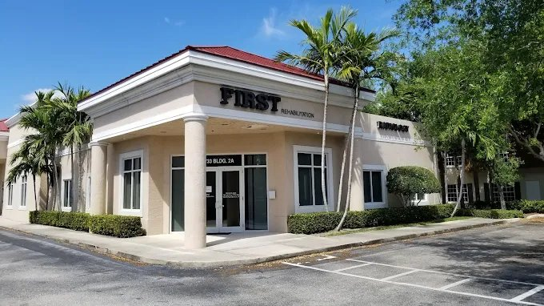
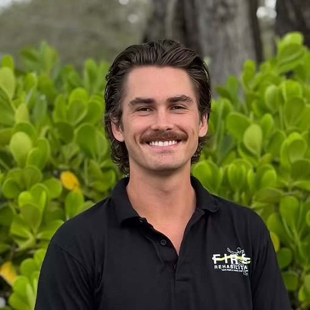
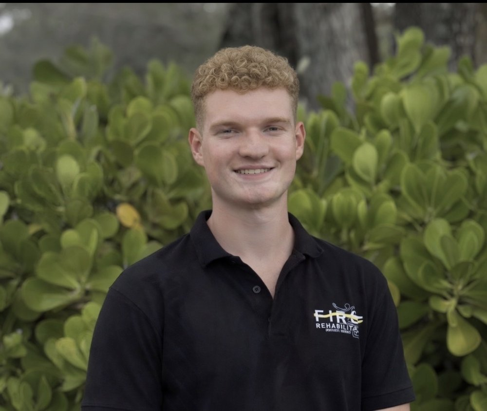
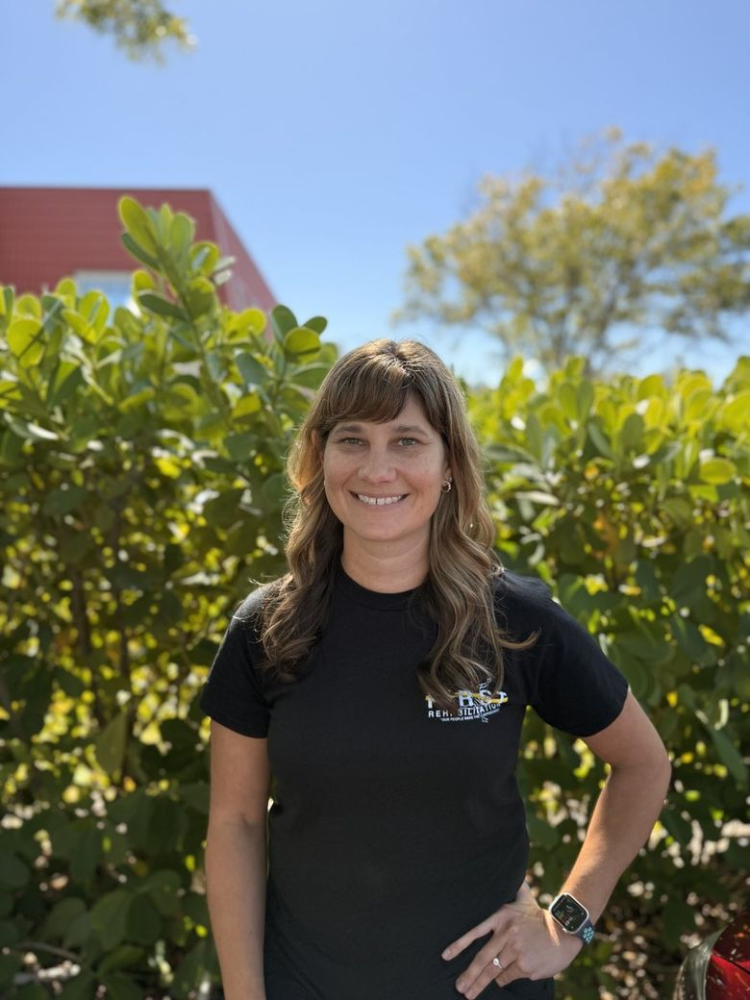
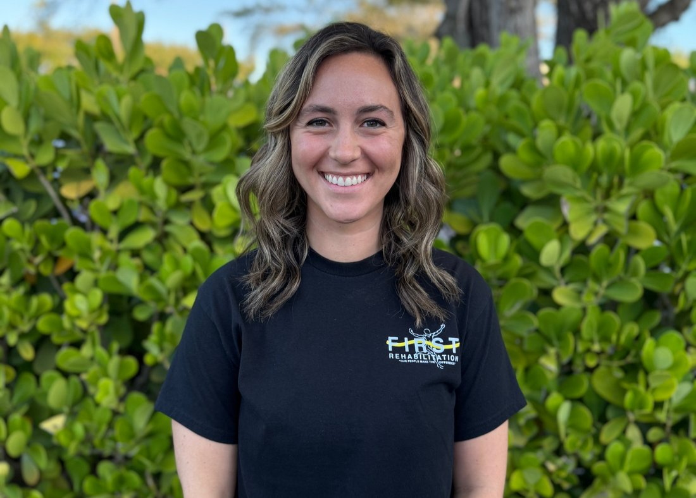
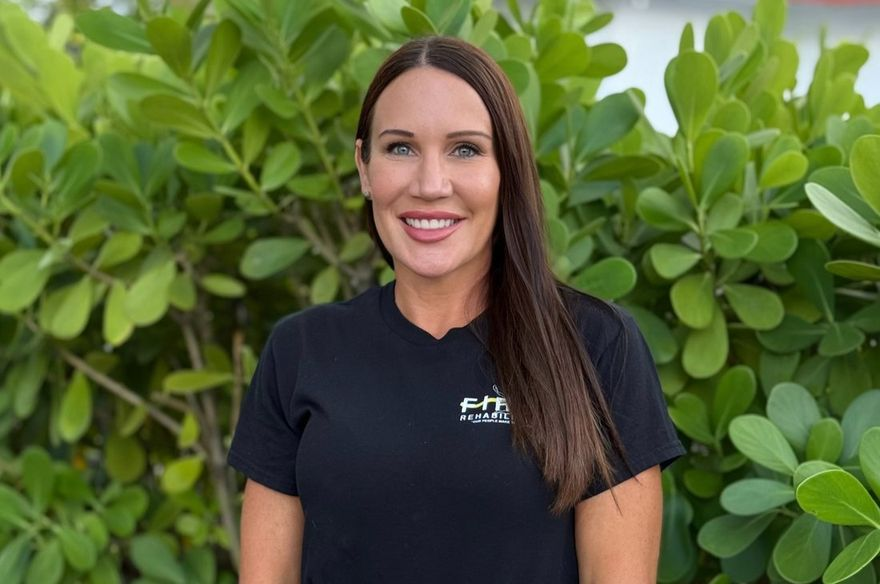

Family-Owned. Patient-Devoted.
Three decades of healing the Palm Beaches — built on one founder's vision and carried forward by family.
One Vision, Generations of Care
Since 1991, First Rehabilitation of North Palm Beach has been a cornerstone of recovery for the Palm Beaches. Founded by David Kashuba, Ph.D., our mission has always been to provide a comprehensive, high-end approach to rehabilitation — one that heals the body and restores the spirit.
What makes us different is what happens after therapy ends. Our exclusive on-site wellness program means graduation from PT or OT isn't goodbye — it's a transition into lifelong strength, guided by the same team that got you well.

assets/media/founder.jpg
'91
The People Behind Your Recovery

into assets/team/
David Kashuba, Ph.D.
Founded First Rehabilitation in 1991 and still treats patients hands-on every day — leading the clinic's comprehensive, high-end approach to rehabilitation across three decades and tens of thousands of recoveries.

into assets/team/
Nick Kashuba
Second-generation leadership keeping the clinic's family-owned values — and its promise that our people make the difference — at the center of everything we do.

into assets/team/
Logan Van Sant
A wealth of knowledge in the physical therapy world, dedicated to helping patients move and feel their best.

into assets/team/
Kayla Dorsey, DPT
A Doctor of Physical Therapy with over a decade of extensive clinical experience in personalized, hands-on care.

into assets/team/
Joni Janik
Helps patients reclaim the daily activities that matter most — restoring independence, confidence, and quality of life.

into assets/team/
Laura Drumm
Leads our certified hand therapy program with surgical-grade precision — from custom splinting to post-operative tendon protocols and lymphedema care.
Life is too short to live in pain.
Start your recovery today with a team dedicated to your long-term wellness and total healing.
Start Your Recovery Today →